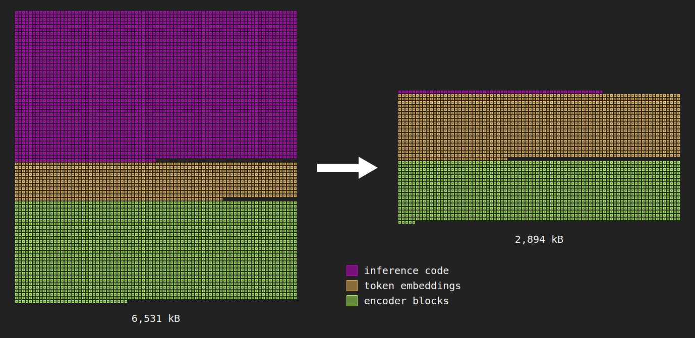

8 minutes
Semantic Search in Under 3MB
This project is a continuation of my previous autoresearch project, which optimized a reranking model to be under 10MB. Digging deeper by hand, I was able to take the size reduction much further, while outperforming reranking models which are 30x larger on this task. In the end I was able to reduce the payload from 11.4 MB to 2.79 MB gzipped.
You can see it in action on my resume page.

Each square represents 1 kB. The majority of overall size reduction came from removing the ORT dependency. However, other changes enabled much better representation quality than the baseline.
Baseline
After running my original autoresearch experiment overnight, I had fairly impressive but tiny 4.3M param dual encoder, quantized to int8 onnx.
However, when I tried using it in my resume page, it wasn’t actually that good. In fact, it was much worse than BM25 that was working alongside it. It is notable that on the eval set I used, much larger models like all-MiniLM-L6-v2 also didn’t perform very well. This suggested that the issue was in training and domain adaptation, not size.
Term dropout
One of the motivating issues was that the model failing to correctly rank docs under simple queries like do you have any leadership experience. The model was latching onto terms like “Grammarly” but not to more abstract ones like “leadership”.
To address this, I performed term dropout, randomly dropping the top TF-IDF term from queries and docs with 20% probability. This both normalized the model against overfitting and helped to combat simple keyword matching that BM25 would already be doing.
Because the corpus is so small, we need to prevent overfitting.
Query mining from job postings
To increase the diversity and realism of potential queries to the model, I created a small pipeline to pull queries from real job postings:
- First, we gather relevant job postings from Kaleh job postings api, which has a generous free tier.
- Next, pull out “queries” from the job postings using a local LLM (
phi4)- A “query” amounts to a rephrasing of a job qualification e.g. “experience with python” -> “do you have experience with python”
- Finally, use the same LLM to identify high-precision matches from my actual resume, if any.
After one round of this process, I had mined 94 queries which raised MRR 21%. But after a second round with ~1000 pairs MRR had mostly plateaued, increasing the same metric ~3 points.
Architecture ablations
At this point, the model was pretty decent for its size. I wanted to see how much more performance we could squeeze out of it, so I ran a series of quick architecture experiments:
Max pooling vs mean pooling: In order to get the final 256-dimensional embedding for comparison, we need to convert the L x 256 output matrix from the model into a 256-dimensional vector, where L is up to 64 tokens long. Previously we used the mean of each column, which is known as “mean pooling”. Switching to max pooling was slightly better (0.60 to 0.634 on a harder query set) because it allowed the strongest value to directly affect the output.
Factorized embeddings: Embeddings for each token are stored in a lookup table with shape (V x D). However, we can factorize this matrix using a low-rank approximation, which is what ALBERT does to save parameters. This saves ~1M params and was neutral on nDCG.
SwiGLU: SwiGLU replaces GELU with a gated unit, and can theoretically lead to richer intermediate representations. However, SwiGLU resulted in no measurable performance gain.
Multi-vector late interaction: Rather than pooling output vectors with mean/max pooling, we use ColBERT-style token-level expressiveness using the MaxSim function. Concretely it looks like this:
def maxsim(query:str, document:str) -> float:
query_vectors = encoder(query)
document_vectors = encoder(document)
score = 0
for q in query_vectors:
# find the highest dot-product match among all document token vectors
best = max(np.dot(q,d) for d in document_vectors)
score += best
return score
Vocab pruning
The first step after tokenizing a string is to get each token’s corresponding embedding from a lookup table. That means the model stores vocab_size x embedding_dimension parameters which is ~8MB already. To make this smaller on disk there’s really only three things you can do: reduce the vocab, reduce the embedding dimension, and reduce bytes per param (quantization). I did all three.
The full BERT wordpiece vocab is 30k tokens, which is way too much. It contains ~1000 “unused” tokens (tokens like [unused123], [unused456]), tokens in foreign languages, and full words like “baltimore” and “vampires” that are irrelevant to my resume. I was able to cut it down to 5000 tokens safely by trimming “unused” and foreign language tokens, then whitelisted tokens present in documents.
Second, I reduced the embedding dimension
- I directly reduced the embedding dimension from 768 to 256.
- I also tried to reduce the effective dimension even further by factorizing the embedding table, but this ended up causing a quality regression and was reverted.
I also aggressively quantized the model, which enabled savings for the whole model, not just the embedding table.
Replacing onnxruntime-web
After pruning the vocab, I realized another large source of file size overhead was the inference code itself, ONNX Runtime Web. ORT was 3.4MB over the wire, 13.2MB uncompressed. The reason it’s so big is that ORT is a general-purpose interpreter for ONNX files, which contain a graph of the weights and all operations in inference.
But my model is extremely simple, and only contains a few different operations. So instead of shipping the model as an .onnx file and relying on ORT to handle it, I shipped the model as a .safetensors file and did the interpretation in a custom WASM binary, built from Rust. To prevent any issues, I ensured numerical parity with ORT prior to swapping it out.
Dropping ONNX means we don’t need general-purpose functions like Transpose, Concat, Reshape, etc. We can get away with index arithmatic alone. That said, I didn’t implement any multithreading or SIMD since the model is so small.
Safetensors is a standard protocol for shipping files and only contains three parts:
- 8 bytes specifying header size
- The header, containing byte offsets into the payload
- The payload, containing raw bytes
Note that technically I don’t even need the first two parts of the safetensors file at all for this, but I felt like shipping in a standard format was worth the small size tradeoff here.
In the end, this change reduced the cost of the inference logic over the wire from 3.4 MB to 4 kB, an 850x reduction.
1.58-bit quantization
Quantization is a pretty standard technique for model size reduction. Models which are trained at 32 bit precision can be served at 16, 8, or even 4 bits while maintaining acceptable quality. 1.58 bit quantization is the most aggressive quantization which tends to work. Ternary quantization restricts weights to only three values: {-1, 0, +1}.
Since this task is a simple reranking task, quality degradation is less obvious than if we were quantizing a decoder model, since there is no “cascade” of increasingly incorrect tokens that will be generated. For this task, I used self-distillation, with the teacher being the multi-vector late interaction model from before, training directly into ternary.
Note that I only quantized the weights to 1.58 bit, and kept the activations in f16. This helped to cut down on the errors and has no effect on the cost over the wire.
Overall, 1.58 bit quantization resulted in an over-the-wire file size reduction from 8.3MB to 3.9MB.
Results
Graded nDCG@10 over 43 LLM-judged queries (0–3 relevance), with a 21-query hard subset:
| Ranker | nDCG@10 (all) | nDCG@10 (hard) |
|---|---|---|
| auto_researcher distilled model (baseline) | 0.562 | 0.285 |
| BM25 lexical baseline | 0.641 | 0.507 |
| shipped 1.58-bit model (after) | 0.787 | 0.694 |
Other experiments
Some of the things I tried didn’t work, either providing no quality benefit or helping on file size while damaging quality too much:
The original distilled embedding model. The 4.7 MB ONNX model from autoresearch wasn’t finetuned for this task. It actually performed worse than BM25 on this corpus. It’s what motivated this entire improvement process. I believe that smaller models have much more difficulty generalizing, although they can still be finetuned for very specific tasks.
Factorizing token embeddings after training. Factorizing the table after training with a low-rank SVD caused high reconstruction error and visibly hurt ranking for ~1 MB saved.
- The same factorization applied during training was neutral.
Attention pooling. I tried added a pooling head but it had no benefit over max-pooling and required additional parameters.
SwiGLU FFN. I tried replacing GELU with SwiGLU, but it didn’t improve the model’s quality. I believe it might have been more helpful in making sense out of more complex representations, but this model is fairly straightforward.
Ternary cross-encoder. This was my original attempted ternary quantization. As a cross encoder, it actually matched the quality of the much larger dual encoder teacher. Cross encoders are known to be more expressive than dual encoders, so if this didn’t work it would mean ternary quantization was too strong for this task.
Diminishing returns of extra data. I scaled the job post mining from 10 postings to 260, but there were significant diminishing returns. I believe this is partially due to the diversity of queries extracted from the job postings, so it might still be possible to increase diversity somewhat without wasting parameters on out-of-domain concepts. At some point, I don’t really care if my model knows what Pneumonoultramicroscopicsilicovolcanoconiosis is.
Conclusion
I learned a few things here. First, small models can work in narrow domains, and even outperform much larger models.
Second, having an eval set we can continuously test ideas against helps tremendously. Some things, like adding an attention pooling head, seem like they should work. But when they are clearly outclassed by things like late interaction with MaxSim, it allows us to move on to optimizing other parts of the model.
Third, although none of these tricks are particularly exotic, it’s good to have a sense of what works and what doesn’t. Late interaction vectors really work, although they have a cost tradeoff. Encoders ship with a ton of tokens which aren’t used. Ternary quantization really works, although the errors probably become more pronounced